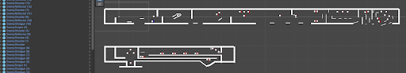

Weekly PPJ Entries for Ricochet Ronin
Met with group to help decide task delegation(2.5 hours)
Wrote up plot summary for game (20 minutes)
Brainstormed worldbuilding details (20 minutes)
Started level design (20 minutes)
I'm optimistic about where we can take this game, we've had a lot of good ideas
We have a large team so we can split the workload
A lot of us share responsibilities or skillsets so we're going to need to divy up the work efficiently
Total Hours: 3
Tags: writing, design, game
Meeting with group to help decide task delegation, set up version control (3 hours)
Writing meetings (30 minutes)
Grayboxed level 1 (1.5 hours)
Began Playtesting (30 minutes)
Brainstormed worldbuilding details (20 minutes)
Researched yadomejutsu (20 minutes)
Things are going smoothly and everyone is doing their best.
It's difficult to finish a lot of work when waiting for the meeting to implement changes.
Total Hours: 6 hours
Tags: writing, design, game
Met with group to help decide task delegation, (2.5 hours)
playtested level 1, diversified enemy layout, edited angle of platforms, started grayboxing additional areas (1.5 hours)
Brainstormed worldbuilding details (30 minutes)
Example Level 1:
Design is getting easier and ideas occurring more frequently
Hard to playtest and design with unfinished features
Total Hours: 4.5 hours
Tags: writing, design, game
Met with group to help decide task delegation, (1 hours)
playtesting (2 hours)
administered playtest (30 minutes)
The game is easier to test with all the features implemented.
It is only possible to realize certain problems now that true testing has begun.
Total Hours: 3.5 hours
Tags: writing, design, game
Met with group (1 hours)
Level Design Meeting (2 hours)
Level Designing (3.5 hours)
The level has more structure and it is easier to envision the final product.
I'm not very good with version control.
Total Hours: 6.5 hours
Tags: level, design, game
Met with group (1 hours)
Level Design Meeting (2 hours)
integrated art assets into level (1 hours
The level has started to look more like an actual game.
The tilemap isn't perfect.
Total Hours: 4 hours
Tags: writing, design, game
Met with group (2 hours)
Level Design (3 hours)
The level is finished and needs to be rigorously playtested.
The level is rather hard.
Total Hours: 5 hours
writing, design, game
personal playtesting
administering playtests
People found the game more fun
There were a couple issues I didn't recognize in my own playtests
Total Hours: 2 hours
Tags: writing, design, game
PPJ Uploads (30 mins)
Upadte sell slide deck (30 mins)
Weekly meetings (1 hr)
Level Design Work (2 hrs)
Made progress on level, almost done
Did not complete level as intended. Not the best work week over break
Finish last floor of level
Polish level with new art
Wyatt Kaiser, Level Design, Week 10
Total Hours: 4 hrs
meeting (4.5 hours)
new art, level geometry (1 hour)
The people developing the art, mechanics, and levels worked well together to arrive at a complete final product.
Learning version control to a point where I pretty much understand it.
The team showed up to the meetings and were vocal about things.
There were many instances I felt blocked by needing help from a member of the dev team.
Doing level design without the final product clearly in mind meant needing to change many things.
The narrative elements were severely limited or cut from the game.
It’s important to scope back early on and to voice concerns about mechanics changes and whatnot. Also, reaching out through the team’s messaging channels is important so they can know what’s going on. Overall, I think the team worked well together and I wish we could’ve kept going a little while longer.
Total Hours: 5.5 hours
Tags: writing, design, game